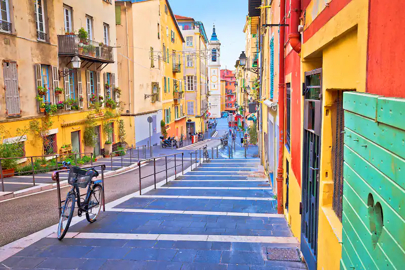
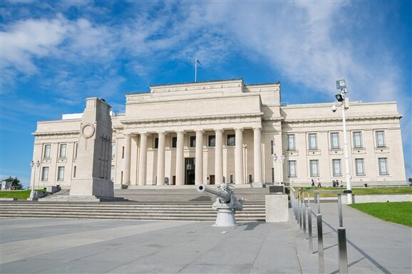
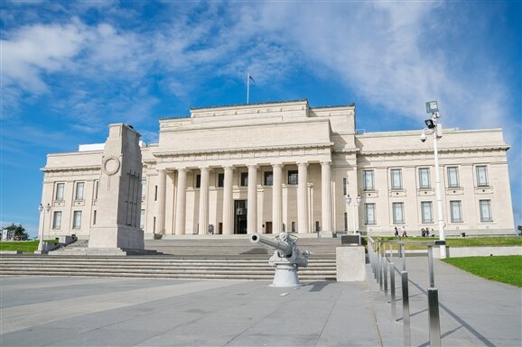

Banff National Park


Geographical Location: North America
Banff National Park is in Western Canada in the province of Alberta. It is near the city of Calgary and situated in the Rocky Mountains. Banff is known for its mountains and natural beauty, along with its plant and animal life. The national park fuels the tourist industry in Western Canada.
Banff has many attractions within its borders including numerous lakes fed by glaciers creating an iconic turquoise color. Banff also borders numerous other national parks further boosting its attractiveness as a tourist location. Banff’s glaciers have been shrinking and may disappear in the next few decades.
Photo Gallery


Apostle Islands, WI


Geographical Location: North America
The Apostle Islands are a collection of 22 islands in Lake Superior located in the northern region of Wisconsin, USA. Originally inhabited by the Ojibwe (Chippewa) people, the islands contain over hundreds of years worth of rich Native American history. In 1970, 21 of the islands and the surrounding waters were designated as the Apostle Islands National Lakeshore, a protected area managed by the National Park Service. Lastly, the islands are home to a diverse range of wildlife, including, white-tailed deer, black bears and various bird species.
There are six lighthouses spread across the islands, making it one of the largest collections of lighthouses in the United States. When the island receives visitors it is viewed as a popular destination for outdoor activities such as kayaking, sailing, hiking and camping. In addition, many people enjoy other activities such as berry picking. Camping is also allowed in 19 of the 21 islands to date.
Photo Gallery


Chicago, Illinois

Geographical Location: North America
On October 8, 1871, the Great Chicago Fire occurred destroying many buildings, miles of street, and leaving one-third of the city’s population homeless. The result of this was the “Great Rebuilding” which was a time period of heightened level of construction, new styles of architecture, innovative buildings, and sprouting economic growth. More than one hundred years ago, the world’s first double-deck trunnion bascule bridge opened on West Lake street. The towers and buildings around this bridge are different types of corporate offices, firms, business centers, restaurants, stores, apartments, condominiums, and hotels along with parks and tourist attractions.
What makes Chicago unique compared to all the other cities in the United States is that it has the most bridges, it inspired Gotham City, world renowned pieces of art, skyscrapers with multiple architectural styles, and the flow of the river is reversed. What once was a rail yard and parking lot, transformed by Mayor Richard M. Daley to become the Millenium Park to celebrate the passage of the second millennium. The Navy Pier was created with the intention of being a shipping and recreation facility and later evolved into premiere entertainment and exposition center. Due to the anti-Chinese sentiment and Chinese immigrants escaping violence, the Chinatown Square opened in 1993 from the efforts of Chinese activists demanding more land.
Photo Gallery
Sequoia National Park


Geographical Location: North America
Sequoia National Park is a large forest located in the Sierra Nevada mountain range in California. It is famous for its gigantic sequoia and redwood trees, as well as its underground Crystal Cave. The park is a well-known attraction to many tourists, receiving more than a million visitors annually. In addition to its collection of giant trees, Sequoia National Park is also home to thousands of prevalent flora and fauna.
Perhaps the most famous feature of Sequoia National Park is the General Sherman tree – the largest tree in the world. Measuring in at 275 feet tall, the tree towers over the surrounding landscape and the people who come to view it. As of today, the General Sherman tree is estimated to be around 2200 years old.
Photo Gallery


Nice, France


Geographical Location: Europe
Nestled on the French Riviera, Nice exudes a unique blend of Mediterranean culture and French allure. French is the predominant language spoken, reflecting its status as a quintessential French city.
The local culture is a mix of traditional French elements and coastal influences, with highlights including the bustling Cours Saleya market and the picturesque Old Town.
Photo Gallery



Aukland, New Zealand


Geographical Location: Oceania/Australia
Auckland is the largest city in New Zealand located on the Northern Island of the country. The city’s population is just below 1.7 million people. Auckland is known as the “City of Sails” for its plethora of sailboats and yachts. The vast amount of waterfronts and harbors are conveniently located for sailors to embark on their hobbies.
Aside from sailing and waterfronts, Auckland is also surrounded by 48 volcanoes and a few rainforests. The climate of Auckland is mild-temperate. The winters are not too cold (averaging 64 degrees Fahrenheit) and summers mildly harsh (around 80 degrees Fahrenheit).
Photo Gallery

 
